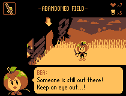

Apple Cornered is a fake horror/comedy RPG created by Jess Wu about apples being eaten. When the Apple Kingdom discovered that something in the land is corrupting and eating apples, one heroic apple is sent to gather applekind's Strongest Warriors to defeat the evil that's responsible!
I had this idea when I ate a honeycrisp apple and pondered the many different varieties of apples and how they could all be different apple races in a RPG.
Please check out the tags on top to see the worldbuilding and pixel art I did for this project!